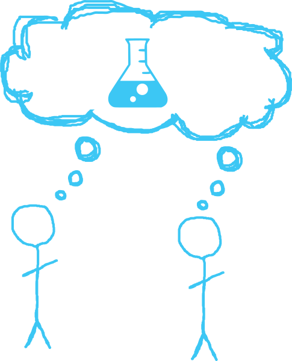
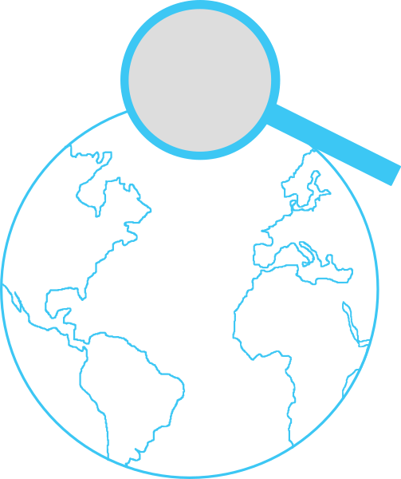
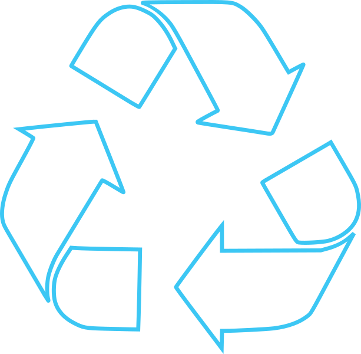

January 11 - February 20, 2017
Students for the Advancement of Society is a high school science club based in Floyd Central High School. I was tasked with the creation of a club website in as early as 2014. With a small amount of coding knowledge and a limited amount of time, I resorted to the Start Bootstrap template, found here.
Eventually, in 2015, I committed time to create a more personalized SASS Club website, this one designed by me. I was dissatisfied by the results, mostly because I did not even think about optimizing the website for mobile devices. I criticized myself for my shortcomings and tried again this year.
I wanted to have a club website that would comprise of all the information needed to state our goals, while being unique and relatively concise. I chose a scrolling-themed website for the fact that I enjoy scrolling animation and I believed that the viewers would also enjoy the animation.
I summarized our goals into three statements, and drew my vectors accordingly. The first vector uses two stick figures thinking of a central idea, signifying unity and collaboration between humankind.
My second vector contained an image of the world to symbolize the nature of Earth and the universe. The magnifying glass represents examining, critiquing, and critically analyzing the world around us.
Finally, the last vector uses the recycling standard logo to demonstrate the need to reuse and restore the natural habitat. The Earth vector was placed in the middle of the recycle image to show our significance and task of restoring environmental equilibrium.
Finally, after inserting a statistic to emphasize the disparity of science, the vectors animate into play and the landing page comes together at the bottom of the website in a simple text character position and fade-in effect.
This website can also be found under the domain www.fcsassclub.com.